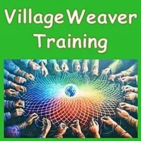
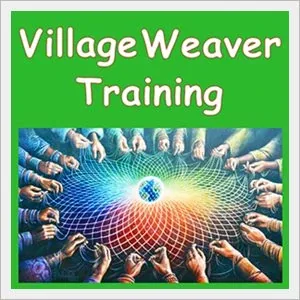
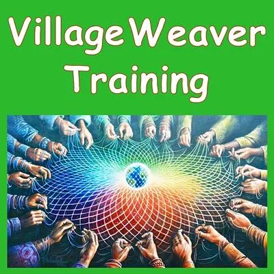
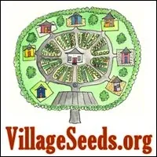
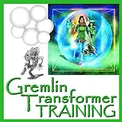
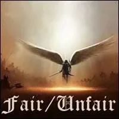
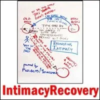
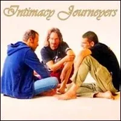
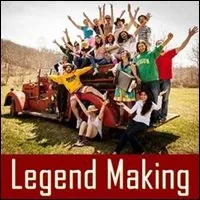
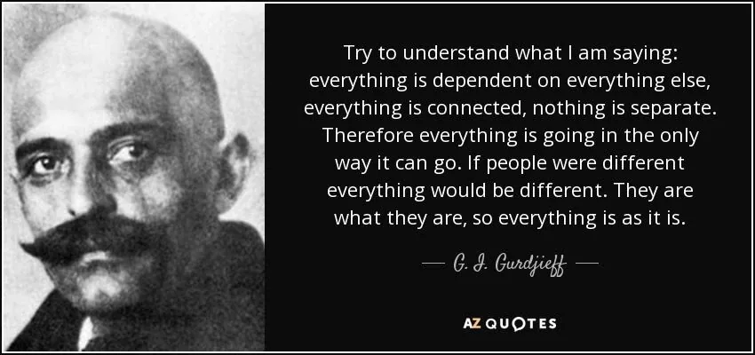

**Village **
Weaver
Training
- …
**Village **
Weaver
Training
- …

- Are you a Village Weaver? - Village Weaver Training - The point of training yourself in Village Weaver skills is to make what you receive possible for others. - No one can become a Village Weaver for you. - More interestingly, no one can stop you serving as a Village Weaver. - After that, no one can stop you from giving Village Weaver Training to others. - The world is in great need of Radically Responsible Village Weavers. - How else can the Village be woven? - VILLAGE WEAVING SERVICES ARE A NEXT CULTURE SPECIALTY- Next culture is powered by skillsets and values that modern culture knows nothing about. - Each person has a piece of the puzzle to contribute. - Village Weaver Training is a specialty of - Possibilitator Training.- During Village Weaver Training you build skills for providing your services to next culture. - PURPOSE OF VILLAGE WEAVER TRAINING- Village Weaver Training provides you with extraordinary tools, practices, and empowerment for healing, connection, intimacy, and groundedness. These are the starting point for a next culture Village Weaver. - What you learn here is what you can deliver to others. Village Weaver Training uses distinctions and processes from Possibility Management which is open code copyleft thoughtware. - The global Team of Village Weavers enhances the efforts of those building bridges to the initiation-centered cultures of archearchy - the human culture that naturally emerges after matriarchy and - patriarchyhave run their course.- A Village Weaver weaves healthy regenerative - gameworlds. - Never doubt that a small group of thoughtful committed individuals can change the world.- In fact, it's the only thing that ever has.- - Margaret Mead - Reports from Village Weaver Training #1 - Being a Village Weaver means intimate involvement in other people's lives so that you can answer specifically to the complex multidimensional needs that arise. This occupies a lot of RAM in a person's Being, as do the concerns of any of the other Possibilitator Specialties. - It would need to feed your Being to be so thoroughly occupied. - Every gameworld also depends on Village Weaving, making calls, going to meetings, moving busy people around to the places they belong in the gameworld. This empowers the individual as their potential comes alive as well as serving the gameworld. - This is not just a 'Green Brain' check-in sharing, or an Evolutionary taking people through their Emotional Healing Processes. It includes having a gameworld builder's overview of what does the gameworld need to fly and weaving human beings into healthy relational formations so that this happens. - Activating the ability for the villagers to be there for each other, meaning for listening, for a process, for possibilities, for connections, for resources, for 5 body foods by inviting others to invite people to other people's trainings or to be an apprentice or to collaborate. - This empowers the whole gameworld to bring two people's both research together and create a new quality of training. The Weaver provides bridges and bands to help people become intimately involved with each other. - How do you Village Weave so many people together? The multitude of subtle social interactions occupies a lot of social RAM. - Zombieism is created by separation or me over you. Bringing people into closer interdependence through exchange can cure Zombieism. - For example, the Emotional Healing Intensive depends on making the calls to weave the Village Team. - In masculine lead gameworlds does not often activate the collaborative connection that risks chaotic emotional messiness. There is stuff all around when you cook, a mess automatically gets made in the kitchen. You include cleaning up the mess. When people collaborate there will be Box to Box conflicts and Low Dramas and competition and status and Gremlin. Zombies heal when there are true Teams of Winning Happening. e.g. in Rage Club Spaceholder Trainings, we are going to deliver similar trainings and we are not going to compete with each other. It is truly inconceivable. - This way the Village Weaving commits to the gameworld rather than committing to single individuals who all have Parts, who all have a unique unpredictable Path, who all have Hidden Competing Commitments and Hidden Purposes. - Village Weaving to serve the gameworld itself rather than to satisfy the Child Contaminated Adult Ego State Green Brain Gremlin needs Adults with Decontaminated Adult Ego States, Centered, Grounded, Bubbled, and Sword Out. It is not the promotion of 'touchy-feely' mushy mixed Contexts so that Boxes feel comfortable. - There is this part of Research that is not practical, for example, Mage Training is a tremendous amount of Research, but who really became a Mage after the Mage Training? Whereas after the Rage Club Spaceholder Trainings many people became Rage Club Spaceholders. - Village Weavers (especially the female variety) may easily have concerns that other Specialties (especially the male variety) cannot even imagine. These concerns may be critical to the flyability of the gameworld. - Taking a Stand for the evolution of human consciousness, for the survival of the human species, can be like building an Ark and then nobody comes. Five people come, or five people send a message five minutes before the meeting starts saying, "I am not coming..." This is demotivating if your purpose is to try to change people. - Possibility Management provides thoughtware for next culture - archearchy. How many people truly get this? How can you wrap your mind around that? To provide next culture value well enough that you can quit your corporate job. - Where do the new Edgeworkers come from? - How can you know which Key you are?- By noticing which Treasures you unlock for others. - Preparation Experiments - All preparations are Experiments. - None of the Village Weaver Training Preparations below are optional. - Village Weaver Training is, however, optional. - The choice is up to you. - First Preparation: Earn Over 1000 Matrix Points in- StartOver.xyzAnd Bring Others With You On Each Journey- Matrix Code - VWTRAINI.01
- First Preparation: Earn Over 1000 Matrix Points in- StartOver.xyzAnd Bring Others With You On Each Journey- Matrix Code - VWTRAINI.01 - Enter The Village Weaver's Experiential Clarity Of Conscious Feelings - And Refuse To Leave It- Matrix Code - VWTRAINI.02
- Enter The Village Weaver's Experiential Clarity Of Conscious Feelings - And Refuse To Leave It- Matrix Code - VWTRAINI.02
- Get Familiar With Multiple Next Culture Village Possibilities To Offer As A Village Weaver- Matrix Code - VWTRAINI.03 - Live In The Extraordinary Village Weaver World Of Using Your 13 Energetic Tools- Matrix Code - VWTRAINI.04
- Live In The Extraordinary Village Weaver World Of Using Your 13 Energetic Tools- Matrix Code - VWTRAINI.04 - Participate In A Minimum of 3- Expand The BoxTrainings Delivered By Different PM Trainers and Already Be Delivering Offline- Expand The BoxTrainings- Matrix Code - VWTRAINI.05
- Participate In A Minimum of 3- Expand The BoxTrainings Delivered By Different PM Trainers and Already Be Delivering Offline- Expand The BoxTrainings- Matrix Code - VWTRAINI.05 - Read EVERY Book On The- Possibilitator Recommended Book List- Matrix Code - VWTRAINI.06
- Read EVERY Book On The- Possibilitator Recommended Book List- Matrix Code - VWTRAINI.06 - Watch EVERY Film On The- Possibility Films List(watch 2 or 3 per week, WITH OTHERS, and Discuss the Story and Distinctions Afterwards)- Matrix Code - VWTRAINI.07
- Watch EVERY Film On The- Possibility Films List(watch 2 or 3 per week, WITH OTHERS, and Discuss the Story and Distinctions Afterwards)- Matrix Code - VWTRAINI.07 - Weave Space for Your Own Weekly 2 Hour Online-or-Offline Village Weaver Possibility Team- Matrix Code - VWTRAINI.08- Make sure that any online Possibility Team you have it is listed at - http://possibilityteam.org- http://possibilitymanagement.org
- Weave Space for Your Own Weekly 2 Hour Online-or-Offline Village Weaver Possibility Team- Matrix Code - VWTRAINI.08- Make sure that any online Possibility Team you have it is listed at - http://possibilityteam.org- http://possibilitymanagement.org - Include Rage Club Online or Offline In Your Village Weaving- Matrix Code - VWTRAINI.09- Train up transformational warrioresses and warriors for building bridges to next culture - archearchy. - Make sure your Rage Club gets listed at - http://rageclub.org
- Include Rage Club Online or Offline In Your Village Weaving- Matrix Code - VWTRAINI.09- Train up transformational warrioresses and warriors for building bridges to next culture - archearchy. - Make sure your Rage Club gets listed at - http://rageclub.org - Live Your Moment-To-Moment Life with Your Point Of Origin Located In Village Weaver First Position- Matrix Code - VWTRAINI.10
- Live Your Moment-To-Moment Life with Your Point Of Origin Located In Village Weaver First Position- Matrix Code - VWTRAINI.10 - Learn To Negotiate Intimacy And Teach This As Part Of Your Village Weaving- Matrix Code - VWTRAINI.11
- Learn To Negotiate Intimacy And Teach This As Part Of Your Village Weaving- Matrix Code - VWTRAINI.11 - Observe Yourself Observing Yourself- Matrix Code - VWTRAINI.12
- Observe Yourself Observing Yourself- Matrix Code - VWTRAINI.12 - Notice What You Notice With- Matrix Code - VWTRAINI.13 - Arrange To Exchange Village Weaver Holdings- Matrix Code - VWTRAINI.14
- Notice What You Notice With- Matrix Code - VWTRAINI.13 - Arrange To Exchange Village Weaver Holdings- Matrix Code - VWTRAINI.14 - Discover The Purpose of Each Noticing And Each Creation - Yours And Others'- Matrix Code - VWTRAINI.15
- Discover The Purpose of Each Noticing And Each Creation - Yours And Others'- Matrix Code - VWTRAINI.15 - Participate In A Minimum of 10- Possibility LabsDelivered By Many Different PM Trainers- Matrix Code - VWTRAINI.16
- Participate In A Minimum of 10- Possibility LabsDelivered By Many Different PM Trainers- Matrix Code - VWTRAINI.16 - Identify Every Emotion (yours and others') - Use Every Emotion You Experience As A Doorway To Your Own Emotional Healing Processes.- Matrix Code - VWTRAINI.17
- Identify Every Emotion (yours and others') - Use Every Emotion You Experience As A Doorway To Your Own Emotional Healing Processes.- Matrix Code - VWTRAINI.17 - Memorize The Reactivity Website Distinctions - Catch Every Reaction In Yourself And Others- Matrix Code - VWTRAINI.18
- Memorize The Reactivity Website Distinctions - Catch Every Reaction In Yourself And Others- Matrix Code - VWTRAINI.18 - Open Your Village Weaver Pearl And Use It As A Map In Your Daily Life- Matrix Code - VWTRAINI.19
- Open Your Village Weaver Pearl And Use It As A Map In Your Daily Life- Matrix Code - VWTRAINI.19 - Complete Your Distilling Destiny Process: Choose your Bright Principles, Live As Your Bright Principles In Action- Matrix Code - VWTRAINI.20
- Complete Your Distilling Destiny Process: Choose your Bright Principles, Live As Your Bright Principles In Action- Matrix Code - VWTRAINI.20
- Complete Your Gremlin Training So You Can Deliver Village Weaving With Your Conscious Gremlin At Your Side- Matrix Code - VWTRAINI.21 - Decontaminate Your Adult Ego State So You Can Weave Adult-Centered Villages- Matrix Code - VWTRAINI.22 - Make Your Village Weaver Website- Matrix Code - VWTRAINI.23
- Make Your Village Weaver Website- Matrix Code - VWTRAINI.23 - Build Your Village Weaver Circle To 1000+ People- Matrix Code - VWTRAINI.24
- Build Your Village Weaver Circle To 1000+ People- Matrix Code - VWTRAINI.24 - Send Out Your Monthly Village Weaver Newsletter To 1000+ People In Your Circle- Matrix Code - VWTRAINI.25
- Send Out Your Monthly Village Weaver Newsletter To 1000+ People In Your Circle- Matrix Code - VWTRAINI.25 - Become A Village Weaving Global Citizen- Matrix Code - VWTRAINI.26
- Become A Village Weaving Global Citizen- Matrix Code - VWTRAINI.26 - Unceasingly Weave Next Culture: Archearchy- Matrix Code - VWTRAINI.27
- Unceasingly Weave Next Culture: Archearchy- Matrix Code - VWTRAINI.27 - Escape Your 8 Prisons... and Stay Out So You Can Weave The Village- Matrix Code - VWTRAINI.28
- Escape Your 8 Prisons... and Stay Out So You Can Weave The Village- Matrix Code - VWTRAINI.28 - Do Your Floor Processes And Deliver Them As Paid Village Weaver Coachings- Matrix Code - VWTRAINI.29
- Do Your Floor Processes And Deliver Them As Paid Village Weaver Coachings- Matrix Code - VWTRAINI.29 - Move Your Point Of Origin To The Extraordinary Context Of Radically Responsible Village Weaver- Matrix Code - VWTRAINI.30 - Shift Your Identity To Radically Responsible Village Weaver- Matrix Code - VWTRAINI.31
- Move Your Point Of Origin To The Extraordinary Context Of Radically Responsible Village Weaver- Matrix Code - VWTRAINI.30 - Shift Your Identity To Radically Responsible Village Weaver- Matrix Code - VWTRAINI.31 - Give One or Two Village Weaver WorkTalks Every Month (online-or-offline)- Matrix Code - VWTRAINI.32
- Give One or Two Village Weaver WorkTalks Every Month (online-or-offline)- Matrix Code - VWTRAINI.32 - Give One or Two Village Weaver Workshops Every Month (online-or-offline)- Matrix Code - VWTRAINI.33
- Give One or Two Village Weaver Workshops Every Month (online-or-offline)- Matrix Code - VWTRAINI.33 - Journey Into The Earth Once Every Month With Village Weaver Questions- Matrix Code - VWTRAINI.34 - Weave 3 Phase Healing Into Your Village Weaving- Matrix Code - VWTRAINI.35
- Journey Into The Earth Once Every Month With Village Weaver Questions- Matrix Code - VWTRAINI.34 - Weave 3 Phase Healing Into Your Village Weaving- Matrix Code - VWTRAINI.35 - Weave Emotional Healing Processes (EHP) Into Your Village Weaving- Matrix Code - VWTRAINI.36 - Weave Creating Possibility Into Your Village Weaving- Matrix Code - VWTRAINI.37
- Weave Emotional Healing Processes (EHP) Into Your Village Weaving- Matrix Code - VWTRAINI.36 - Weave Creating Possibility Into Your Village Weaving- Matrix Code - VWTRAINI.37 - Deliver Five To Ten Paid Village Weaver Coachings Per Week- Matrix Code - VWTRAINI.38 - Weave The Emotional Healing Intensive (EHI) Into Your Village Weaving- Matrix Code - VWTRAINI.39
- Deliver Five To Ten Paid Village Weaver Coachings Per Week- Matrix Code - VWTRAINI.38 - Weave The Emotional Healing Intensive (EHI) Into Your Village Weaving- Matrix Code - VWTRAINI.39 - Become Money - i.e. Weave A Village That Exchanges Value Instead Of Money- Matrix Code - VWTRAINI.40
- Become Money - i.e. Weave A Village That Exchanges Value Instead Of Money- Matrix Code - VWTRAINI.40 - Start And Run A Village Weaver Growness (in contrast to a Village Weaver Business)- Matrix Code - VWTRAINI.41 - Become A Specialist In Torus Meeting Technologies (Circular Org Charts)- Matrix Code - VWTRAINI.42
- Start And Run A Village Weaver Growness (in contrast to a Village Weaver Business)- Matrix Code - VWTRAINI.41 - Become A Specialist In Torus Meeting Technologies (Circular Org Charts)- Matrix Code - VWTRAINI.42 - Quit Your Corporate Job- Matrix Code - VWTRAINI.43
- Quit Your Corporate Job- Matrix Code - VWTRAINI.43 - Weave Your Next Culture Gaian Gameworld- Matrix Code - VWTRAINI.44 - Weave Your Archearchy Nanonation Gameworld Into The Global Network Of Nanonations- Matrix Code - VWTRAINI.45
- ## Frequently Asked Questions- #### ... although, not frequently enough1- What is Village Weaver Training actually?2- Why is Village Weaving important?3- How do I know if I am a Village Weaver?4- What will I learn in Village Weaver Training?5- How is Village Weaver Training delivered?6- Where will I use my Village Weaving skills?7- Can I make money doing Village Weaving?8- What is Archearchy and next culture?9- What is Possibility Management?10- How can I deliver Village Weaver Trainings?
- THEN WHAT? - THEN YOUR TRAINING BEGINS. - ...Village Weaver Training is how we practice together in Transformational Training Spaces. - As the Great Mother keeps saying: " - Practice, practice, practice!"
- Weave Your Next Culture Gaian Gameworld- Matrix Code - VWTRAINI.44 - Weave Your Archearchy Nanonation Gameworld Into The Global Network Of Nanonations- Matrix Code - VWTRAINI.45
- ## Frequently Asked Questions- #### ... although, not frequently enough1- What is Village Weaver Training actually?2- Why is Village Weaving important?3- How do I know if I am a Village Weaver?4- What will I learn in Village Weaver Training?5- How is Village Weaver Training delivered?6- Where will I use my Village Weaving skills?7- Can I make money doing Village Weaving?8- What is Archearchy and next culture?9- What is Possibility Management?10- How can I deliver Village Weaver Trainings?
- THEN WHAT? - THEN YOUR TRAINING BEGINS. - ...Village Weaver Training is how we practice together in Transformational Training Spaces. - As the Great Mother keeps saying: " - Practice, practice, practice!" 












- The Village Weaver makes everything different by ongoingly transforming herself. - Application to Village Weaver Training - ## ScheduleThe next Village Weaver Training begins Tuesday 16 March 2021.- WHEN: 8 weeks, on Tuesdays, on March 16 @5-7.30pm GMT @6-8.30pm CET @9-11.30pm PST @12-14.30pm EST @6-8.30am NZT The Training will then starts:- at 5pm GMT/ 6pm CET on March 16, and 23.- at 6pm GMT+1/ 7pm CET on March 30- at 7pm GMT+1/8pm CET from April 6 - Village Weaver Training includes: eight 2h30 sessions + weekly challenges, experiments and support on the Village Weaver Telegram group + optional single coaching session with Ana Norambuena. - INVESTMENT: sliding scale 250-450 Euros, you choose the value you want to exchange. - PREREQUISITE: you have participated in an - Expand The Box Training& you love Village Weaving.- ## LIMIT: 24 participants.- APPLICATION: If you think you qualify, you may apply here: - NOTE:This website is a- Bubble in the Bubble Map- StartOver.xyz- doorway- experiments- upgrade your thoughtware- point of origin- create- possibility- knowledge- about. Your- thoughtware- with. When you- change your thoughtware- liquid state- reorganizes- feelings- emotions- upgrading your thoughtware- build matrix- consciousness (archived — not captured)- low drama- reactivity- collectively build- responsibly- VWTRAINI.00to log your Matrix Point for reading this website on- StartOver.xyz